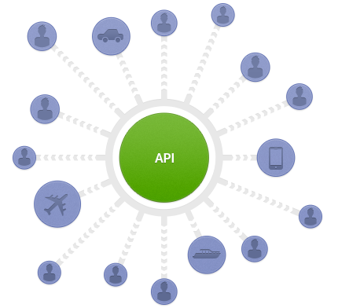

A Stubber Service
(Ember Style)
Why?
Check out this file
// vidz/app/assets/javascripts/lib/segment.io.stubs.js
window.analytics = window.analytics || [];
window.analytics.methods = ['identify', 'group', 'track',
'page', 'pageview', 'alias', 'ready', 'on', 'once', 'off',
'trackLink', 'trackForm', 'trackClick', 'trackSubmit'];
window.analytics.factory = function(method){
return function(){
var args = Array.prototype.slice.call(arguments);
args.unshift(method);
window.analytics.push(args);
return window.analytics;
};
};
for (var i = 0; i < window.analytics.methods.length; i++) {
var key = window.analytics.methods[i];
window.analytics[key] = window.analytics.factory(key);
}
Vidz.StubberService to the rescue!

Let's look at the Public Api
#callMethod
// services/stubber.js
callMethod: function(providerName, method, args) {
/*
README: this is where all of the error handling occurs
- if method $nin methods
- if provider $nin providers, etc
I.E. don't use _methods!
*/
var provider = this.providers[providerName];
if (!provider) {
Ember.debug('No provider registered for ' + providerName + '. Use stubber#registerProvider to register' + providerName +'.');
return;
} else if (provider.availableMethods.indexOf(method) < 0) {
Ember.debug('#' + method + 'method not available for ' + providerName + '.')
return;
}
if (provider.loadedObject == null) {
provider.queuedActions.push({
method: method,
args: args
});
} else {
this._callMethod(providerName, method, args);
}
},
#registerProvider
// services/stubber.js
registerProvider: function(providerName, methods) {
if (typeof methods === 'string') {
methods = [methods];
}
if (this.providers[providerName]) {
throw "StubberService provider " + providerName + " already registered."
} else {
this.providers[providerName] = {
availableMethods: methods,
loadedObject: null,
queuedActions: Ember.A()
};
}
},
#loadProvider
// services/stubber.js
loadProvider: function(providerName, loadedObject) {
if (this.providers[providerName]) {
this.providers[providerName].loadedObject = loadedObject;
this._processQueue(providerName);
} else {
Ember.debug('No provider registered for ' +
providerName +
'. Use stubber#registerProvider to register' +
providerName + '.'
);
}
},
Behind The Scene
#_processQueue
// services/stubber.js
// triggered by `loadProvider`.
// Walks the queue and calls the methods.
_processQueue: function(providerName) {
var queuedActions = this.providers[providerName].queuedActions;
if (Ember.isEmpty(queuedActions)) return
for (var i = 0, len = queuedActions.length; i < len; i++) {
var action = queuedActions.shift();
this._callMethod(providerName, action.method, action.args);
}
}
#_callMethod
// services/stubber.js
// yay! Finally my methods get called!
_callMethod: function(providerName, method, args) {
var providerObject = this.providers[providerName].loadedObject;
providerObject[method].apply(providerObject, args);
},
Let's Stub Something!
Scott.js
Fred has heard some amazing things about Scott.js and INSISTS we use it on TheScene.
// util/scott.js
;(function() {
function Scott() {
this.doSomethingAmazing = function() {
// .. 2 million lines omitted for brevity
}
this.launchRockets = function() {
// .. 6 million lines omitted for brevity
}
this.sendScottFiveDollars = function() {
// .. 20 million lines omitted for brevity
}
}
window._scott = new Scott();
})();
Make a Scott Service
// services/scott.js
;(function() {
Vidz.ScottService = Ember.Object.extend({
doSomethingAmazing: function() {
// stay tuned!
},
launchRockets: function() {
// stay tuned!
},
sendScottFiveDollars: function() {
// stay tuned!
}
});
})();
Make a Scott Initializer
// initializers/scott.js
;(function() {
Ember.Application.initializer({
name: 'scott',
after: ['stubber'],
initialize: function(container, application) {
application.register('service:scott', Vidz.ScottService);
application.inject('controller', 'scott', 'service:scott');
}
});
})();
Register Scott on init
// services/scott.js
;(function() {
Vidz.ScottService = Ember.Object.extend({
_registerScott: function() {
this.get('stubber').registerProvider('Scott', [
'doSomethingAmazing',
'launchRockets',
'sendScottFiveDollars'
]);
}.on('init'),
doSomethingAmazing: function() {
// stay tuned!
},
launchRockets: function() {
// stay tuned!
},
sendScottFiveDollars: function() {
// stay tuned!
}
});
})();
Implement "Scott" Methods using Stubber
// services/scott.js
;(function() {
Vidz.ScottService = Ember.Object.extend({
_registerScott: function() {
this.get('stubber').registerProvider('Scott', [
'doSomethingAmazing',
'launchRockets',
'sendScottFiveDollars'
]);
}.on('init'),
doSomethingAmazing: function() {
var stubber = this.get('stubber');
stubber.callMethod('Scott', 'doSomethingAmazing', arguments);
},
launchRockets: function() {
var stubber = this.get('stubber');
stubber.callMethod('Scott', 'launchRockets', arguments);
},
sendScottFiveDollars: function() {
var stubber = this.get('stubber');
stubber.callMethod('Scott', 'sendScottFiveDollars', arguments);
}
});
})();
Setup Lazy Loading
// view/application.js
_loadThirdPartyLibs: function() {
var view = this;
Ember.run.schedule('afterRender', function() {
var stubber = view.get('stubber');
// ...
LazyLoad.js('utils/scott.js', function() {
stubber.loadProvider('Scott', window._scott);
});
// ...
});
},
Reap Benefits!
// templates/watch/index.js.hbs
<button {{action 'sendScottFiveDollars'}}>SEND SCOTT FIVE DOLLARS</button>
// controllers/watch-page.js
// ...
actions: {
sendScottFiveDollars: function() {
var scott = this.get('scott');
scott.sendScottFiveDollars();
}
}
// ...